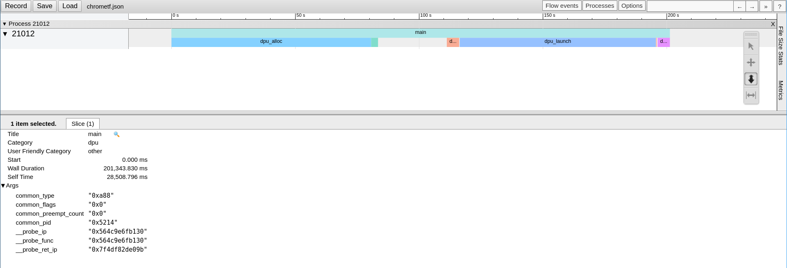

Application profiling
How does this work?
The Linux perf tool is used to profile the host side of an application. The UPMEM SDK comes with several profiling scripts that allow:
To get all the memory transfers bandwidth done in an application.
To get the duration of specific functions in an application and its shared libraries.
To trace an application and UPMEM’s API, generating a JSON file that can be displayed by the Google Chrome trace viewer.
Configuration
Install the perf package of the distribution: on Debian linux-perf or linux-tools-common, on Rocky perf.
Install the Python babeltrace bindings:
$ sudo apt install python3-babeltrace
$ sudo dnf install epel-release $ sudo dnf --enablerepo powertools install python3-babeltrace
Check that your version of perf can convert traces to CTF.
$ perf data convert --help
Check if the
--to-ctfoption is available. As of today, all the supported distributions should have this feature except for Ubuntu 20.04.If CTF isn’t available:
If you get an error message, or if the
--to-ctfoption is not available, you need to build perf with babeltrace support. Here is some guidance on how to do that:$ export version=$(uname -r | cut -d'-' -f1) # Get short version of your kernel $ sudo apt install linux-source libbabeltrace-dev # Get sources for your distribution and the babeltrace library $ tar xaf /usr/src/linux-source-<archive for your kernel> # Extract them $ cd linux-source-"$version"/tools/perf # Navigate to the perf directory $ LIBABELTRACE=1 make # Build perf with babeltrace support
$ export version=$(uname -r | cut -d'-' -f1) # Get short version of your kernel $ sudo dnf install --enablerepo powertools kernel-devel libbabeltrace-devel # Install the kernel source package $ cp -r /usr/src/kernels/<kernel version> ./linux-source-"$version" # Copy the kernel source to your worskpace $ cd linux-source-"$version"/tools/perf # Navigate to the perf directory $ LIBABELTRACE=1 make # Build perf with babeltrace support
Check missing dependencies/optional dependencies in the
makeoutput and install them. Build again if needed.$ sudo make prefix=/usr VERSION="$version" install
$ make prefix=$HOME/.local VERSION="$version" install $ ln -s $HOME/.local/bin/perf $HOME/.local/bin/perf-$version $ # Make sure that $HOME/.local/bin is in your PATH
Install the Python3 package pyelftools:
$ sudo apt install python3-pyelftools
$ sudo dnf install python3-pyelftools
Check the version of the installed package:
$ python3 -c "import elftools; print(elftools.__version__)"
If the version is lower than 0.26, update the package through pip:
$ pip3 install "pyelftools>=0.26"
Set up the permissions as shown in the Profiling DPU programs section.
Application memory transfers:
Launch an application using the DPU profiling tool:
$ dpu-profiling memory-transfer -- APPLICATION_AND_ITS_ARGUMENTS
Example
$ dpu-profiling memory-transfer -- ./trivial_checksum_example_host_multirank
*** WRAM write ***
size number bandwidth duration function names
/dev/dpu_rank0:
13.000KB 1 138.456MB/s 96.982us dpu_copy_to_wram_for_rank
/dev/dpu_rank1:
13.000KB 1 143.767MB/s 93.399us dpu_copy_to_wram_for_rank
/dev/dpu_rank2:
13.000KB 1 126.023MB/s 106.550us dpu_copy_to_wram_for_rank
/dev/dpu_rank3:
13.000KB 1 128.371MB/s 104.601us dpu_copy_to_wram_for_rank
/dev/dpu_rank4:
13.000KB 1 123.338MB/s 108.869us dpu_copy_to_wram_for_rank
/dev/dpu_rank5:
13.000KB 1 129.798MB/s 103.451us dpu_copy_to_wram_for_rank
/dev/dpu_rank6:
13.000KB 1 129.114MB/s 103.999us dpu_copy_to_wram_for_rank
/dev/dpu_rank7:
13.000KB 1 142.240MB/s 94.402us dpu_copy_to_wram_for_rank
/dev/dpu_rank8:
13.000KB 1 133.774MB/s 100.376us dpu_copy_to_wram_for_rank
/dev/dpu_rank9:
13.000KB 1 134.265MB/s 100.009us dpu_copy_to_wram_for_rank
Average:
13.000KB 10 132.602MB/s 101.263us dpu_copy_to_wram_for_rank
*** MRAM write ***
size number bandwidth duration function names
/dev/dpu_rank0:
4.000MB 1 722.991MB/s 5.533ms dpu_copy_to_mrams_64dpus
/dev/dpu_rank1:
4.000MB 1 942.092MB/s 4.246ms dpu_copy_to_mrams_64dpus
/dev/dpu_rank2:
4.000MB 1 3.946GB/s 990.002us dpu_copy_to_mrams_64dpus
/dev/dpu_rank3:
4.000MB 1 968.900MB/s 4.128ms dpu_copy_to_mrams_64dpus
/dev/dpu_rank4:
4.000MB 1 940.014MB/s 4.255ms dpu_copy_to_mrams_64dpus
/dev/dpu_rank5:
4.000MB 1 1.850GB/s 2.112ms dpu_copy_to_mrams_64dpus
/dev/dpu_rank6:
4.000MB 1 705.802MB/s 5.667ms dpu_copy_to_mrams_64dpus
/dev/dpu_rank7:
4.000MB 1 1.131GB/s 3.453ms dpu_copy_to_mrams_64dpus
/dev/dpu_rank8:
4.000MB 1 703.296MB/s 5.688ms dpu_copy_to_mrams_64dpus
/dev/dpu_rank9:
4.000MB 1 1.869GB/s 2.090ms dpu_copy_to_mrams_64dpus
Average:
4.000MB 10 1.024GB/s 3.816ms dpu_copy_to_mrams_64dpus
*** IRAM write ***
size number bandwidth duration function names
/dev/dpu_rank0:
4.000KB 1 36.685MB/s 121.456us dpu_copy_to_iram_for_rank
/dev/dpu_rank1:
4.000KB 1 37.685MB/s 118.233us dpu_copy_to_iram_for_rank
/dev/dpu_rank2:
4.000KB 1 35.336MB/s 126.093us dpu_copy_to_iram_for_rank
/dev/dpu_rank3:
4.000KB 1 33.278MB/s 133.891us dpu_copy_to_iram_for_rank
/dev/dpu_rank4:
4.000KB 1 35.009MB/s 127.270us dpu_copy_to_iram_for_rank
/dev/dpu_rank5:
4.000KB 1 33.970MB/s 131.163us dpu_copy_to_iram_for_rank
/dev/dpu_rank6:
4.000KB 1 34.836MB/s 127.903us dpu_copy_to_iram_for_rank
/dev/dpu_rank7:
4.000KB 1 37.743MB/s 118.050us dpu_copy_to_iram_for_rank
/dev/dpu_rank8:
4.000KB 1 35.409MB/s 125.832us dpu_copy_to_iram_for_rank
/dev/dpu_rank9:
4.000KB 1 36.135MB/s 123.304us dpu_copy_to_iram_for_rank
Average:
4.000KB 10 35.554MB/s 125.319us dpu_copy_to_iram_for_rank
Application functions durations:
Launch an application using the DPU profiling tool and set the functions to get the durations:
$ dpu-profiling functions -f "APPLICATION_FUNCTIONS" -d "DPU_HOST_API_FUNCTIONS" -- APPLICATION_AND_ITS_ARGUMENTS
Example
$ dpu-profiling functions -f main -d dpu_copy_to_mrams -d dpu_copy_to_wram_for_rank -- ./trivial_checksum_example_host_multirank
*** libdpu_dpu_copy_to_wram_for_rank: avg: 103.411us tot: 1.034ms (nb: 10)
*** trivial_checksum_example_host_multirank_main: avg: 210.739ms tot: 210.739ms (nb: 1)
*** libdpu_dpu_copy_to_mrams: avg: 3.536ms tot: 35.363ms (nb: 10)
Application tracing:
Launch an application using the DPU profiling tool:
$ dpu-profiling functions -o chrometf.json -A -- APPLICATION_AND_ITS_ARGUMENTS
From here, different choices are available:
Either launch Google Chrome, open the address https://ui.perfetto.dev/ (or the legacy chrome://tracing), and use the Open trace file button at the top-left corner of the page to load the JSON file chrometf.json generated by dpu-profiling.
Or use any web browser by first converting the JSON file chrometf.json into an html file:
$ git clone https://chromium.googlesource.com/catapult/ $ ./catapult/tracing/bin/trace2html PATH_TO_chrometf.json --output=my_trace.html
Note that this solution generates an HTML file that is way smaller than the JSON file but that is longer to be open by the web browser.
Example
$ dpu-profiling functions -o chrometf.json -A -- ./trivial_checksum_example_host_multirank

Notes
Profiling is a costly process that can change the duration of an application.
Profiling generates a lot of data and should be used on small instances of an application.
If an application generates a lot of events and some of them are lost, the warning below will appear at the end of the application. To solve that issue, dpu-profiling comes with an option that allows increasing the size of the kernel internal buffer, the default size is 8M.
Warning: Processed 54372 events and lost 2 chunks! Check IO/CPU overload!
If one function does not appear in the results, it is likely because this function was inlined by the compiler. All the above scripts generate a log file containing all outputs from the Linux perf tool. If the problem comes from the inlining of the function, the error below will appear in the corresponding log file. To solve this issue, declare the function with __attribute__((noinline))
Failed to find "FUNCTION_NAME%return", because FUNCTION_NAME is an inlined function and has no return point.